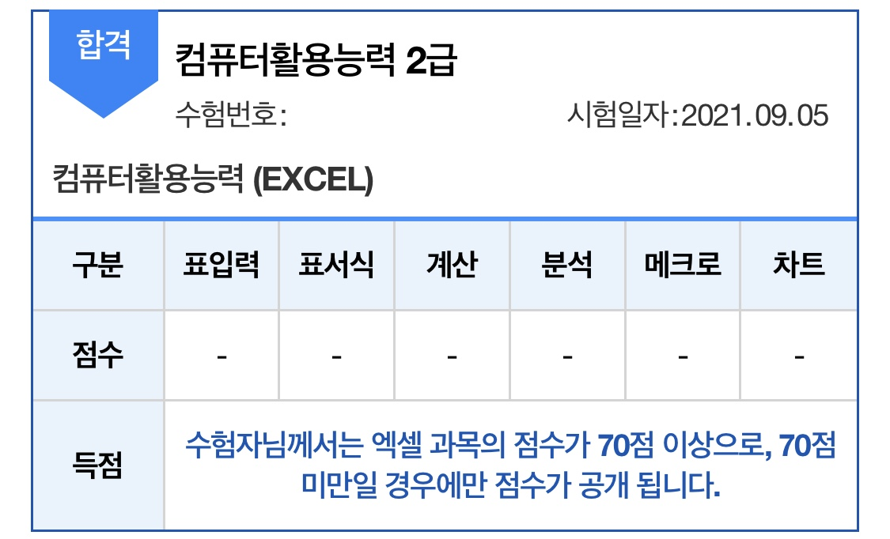
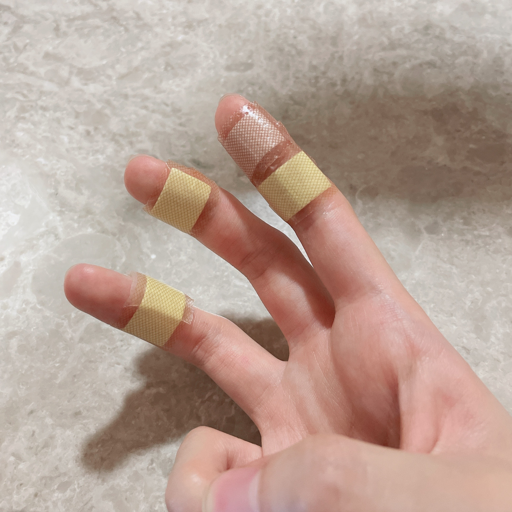

한 달에 한 번, 바쁘다 바빠 울 가족 정보를 요약해주는 달月소수!
첫 뉴스레터를 구독해 주신 여러 분을 환영해요🙌 오늘 소개하는 9월의 소식!! 즐겁게 만나보세요😇
💡 이달月의 체크 포인트✅
✔️컴활 합격이다! <컴퓨터자격증>✔️요리를 해보자~어라, <손가락 화상>
✔️추석맞이 여행가자! <설악산>
컴퓨터자격증💻

7월12일,
엄마와 함께 컴활2급 필기시험에 합격했어요!
그리고 필기가 끝나면 실기가 있죠.
엄마는 회사 일 때문에 실기공부 같이 못해!✋
희지 혼자서 공부를 해야했는데요. 합격 커트라인 70점을 너무 쉽게 본 탓일까요?
8월 달 시험에서 66점으로 불합격합니다.😢
충격을 받고 열심히 공부해서 9월 5일, 컴활2급 자격증 취득에 성공했어요!
이제 엄마만 남았네요😅점점 바빠질텐데...고민이에요!
손가락 화상🔥

9월 3일, 그러니까 컴활시험을 이틀 앞둔 시점에서 희지가 손가락에 화상을 당했어요😱
어떤 일이 있었냐면요.
'봉구스 밥버거'가 먹고 싶다고 정인이가 노래를 불렀었거든요.
처음엔 무시하다가 나중엔 희지도 먹고 싶어졌나봐요. 그래서 만들어 먹기로 결정!
전자렌지에 밥을 데우고...스팸을 썰고...소스를 만들고...단무지를 넣고...
아 맞다! 밥 꺼내야지!!
우당탕당. 뜨거운 밥그릇에 화상을 당했어요.🔥
하루 종일 화끈화끈. 잘 때도 얼음팩을 꼭 쥐고 잤답니다😭
🙋'이런 말해서 미안한데 밥버거
는 어떻게 됐어?'
궁금...한가요?🙂 재료는 다 준비되어 있었기에 정인이가 만들어 먹고, 설거지도 15년 인생 처음으로 했답니다.
이번 달 황당사건 1위를 주고싶슈!🏆
추석맞이 여행가자!🧳

9월 20일-21일 강원도 속초로 여행을 떠나요~
설악산 비선대를 보기 위해 떠난 여행이었는데요.
예상보다 시간이 여유로워 속초바다 감상!
여기서 BTS뷔가 추천한 물회도 먹었는데 멍게가 들어있어 (많이) 비렸어요😂
그런 다음 도착한 비선대는 그야말로 절경이고요. 장관입니다.
풍경을 눈으로 담느라 시간가는 줄 몰랐대요.⛰️
이달月의 TMI🧐💬💭
잠깐! 다음 달月 주요 뉴스⏰
💎10월 4일(월)
개천절 대체휴일
💎10월 11일(월)
한글날 대체휴일
💎10월18일(월)~10월 22일(금)
희지🐍 중간고사
💎10월 18일(월)
정인🐷생일
엄마🐯 2차 백신 접종
💎10월 25일(월)
아빠🐶생일
달月소수 뉴스레터 어떠셨나요?
오늘도 달月소수와 함께 해줘서 고마워요.
안녕!